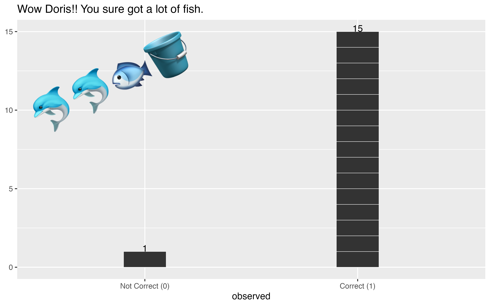
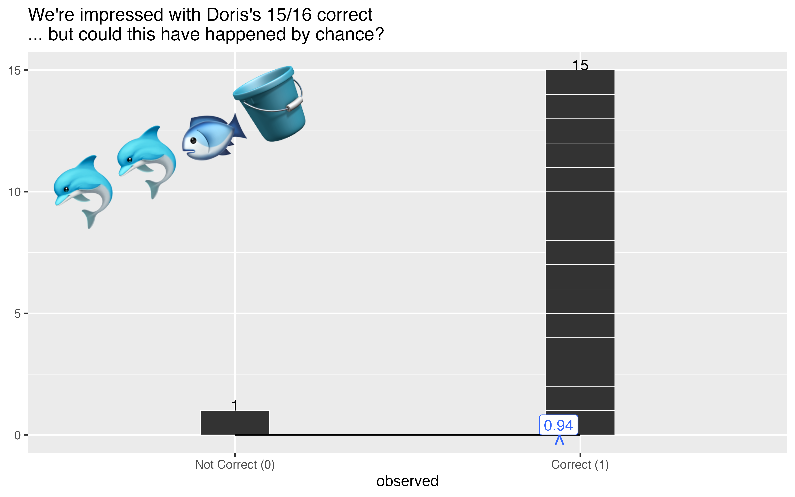
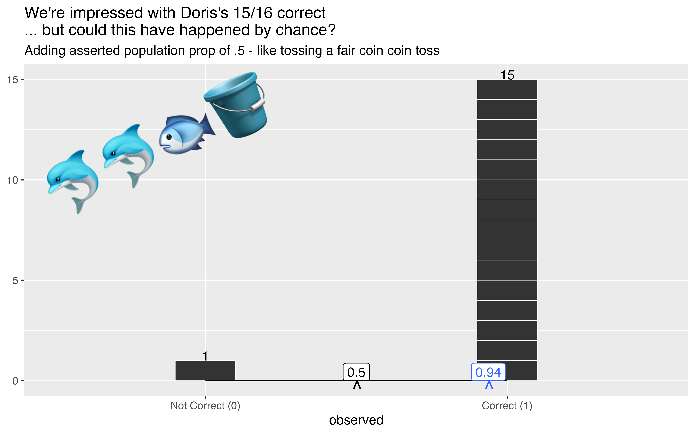

Proportions of successes, binomials, and evidence to reject the null train-of-thought
Author
Evangeline Reynolds
Published
May 13, 2026
Step 0: A Scenario
We started thinking about formal st_t_st_c_l tests (‘hyp_th_s_s t_st_ng’) first with case of the friendly d_lph_ns Doris and Buzz. Trainers run an experiment with the two dolphins in a large tank. Buzz is facing one side where the trainer indicates which way Doris will needs to go (right or left) to get a f_sh prize from another trainer. Buzz and Doris are separated by a large curtain, so we know that Doris cannot see what Buzz’s trainer has indicated (but the trainers are able to c_mm_n_c_t_ and settle on a fish-treat direction).
The experiment is run because the trainers are curious if Doris and Buzz could communicate about something like direction. They repeat the experiment 16 times. Out of these times, Doris goes to the correct side, and earns a fish 15 times! That seems pretty good! But, could Doris just have been guessing. More statistically speaking, we might ask, is what we _bs_rv_ different from a ‘ch_nc_ m_d_l’? Is Doris’ outcomes c_ns_st_nt with a 50-50 guess, just like flipping a coin.
library(tidyverse)library(ggprop.test)dolphin_data |>ggplot() +aes(x = observed) +geom_stack() +geom_stack_label() +# New! using a text annotation layerannotate(geom ="text", x =I(.2),y =I(.75),label ="🐬🐬🐟🪣",angle =25,size =18) +labs(title ="Wow Doris!! You sure got a lot of fish.")

To look how consistent the outcome 15/16 fish with a chance model, we’ll use the logic of the ‘Prop test’, or ‘one-sample proportion test’.
Step 1: Calculate a proportion
The very first step to tackling this problem is just to calculate the observed statistic, in this case, the proportion\(\hat{p}\) of successes.
\[ \hat{p} = \frac{n_{successes}}{n_{total}} \]
This is 0.9375. Also is the same result as taking the mean of the values of the outcomes encoded as zeros and ones: c(0, 1, 1, 1, 1, 1, 1, 1, 1, 1, 1 ,1, 1, 1, 1, 1, 1)! The proportion (and mean) is the balancing point of the data. So let’s position our mean along a beam that extends from zero to one to ‘balance’ our stacked observations.
last_plot() +geom_support() +geom_prop() +geom_prop_label() +labs(title ="We're impressed with Doris's 15/16 correct \n... but could this have happened by chance?")

And by chance, we mean guessing, a 50-50 propensity to go to either side, no matter what Buzz and his trainer have going on. Let’s place the asserted proportion of .5 as a contrast in our figure:
last_plot() +stamp_prop(.5) +stamp_prop_label(.5) +labs(subtitle ="Adding asserted population prop of .5 - like tossing a fair coin coin toss")

And let’s ‘toss some coins’. If we do 16 coin tosses, we can see a real one-time outcome of what happens just by chance (say heads is a ‘success’), and associated proportion for 16 50-50 chance trials!
Alright, from these chance experiments, we might feel like we start to have footing to say that this Doris and Buzz’s experience isn’t consistent with chance.
But… simulation is kind of a hassle - is there a more analytic, math-based approach, where I can just think about the proportion outcomes of a lot of 16 trial experiments?!!?
Yes! Since we are just looking at coin flips with precise probabilistic outcomes, we can use the a binomial distribution.
Let’s first look at the distribution associated with a single coin flip below. We’ll see that the proportion of successes can either by 1 or 0 - and there’s a 50-50 chance of either. It’s head or tails.
For two coin flips, we start to see branching… We see that for proportions of successes, we can get TT tails-tails, both TH or HT (half successes), or HH (100% successes).
How often is something so extreme or more extreme as .94 to occur just by chance? We’ll go back to our full set of probability associated with different proportions…
tidy_dbinom(num_trials =16, single_trial_prob = .5) |>filter(num_successes >=15|# we'll look at as extreme as 15 successes num_successes <=1) # and on the other side 1 is as extreme
2* (.0002441406+ .00001525879) # 4 in 10000 times!! not often!
[1] 0.0005187988
5.1879878^{-4} is my p-value. Its the proportion of times we’d see something as or more extreme than the null if the null is true.
Since we have a very small p-value (4/10000) – that the chance of observing something like this is very small if the null is true – then we can reject the null hypotheses of a chance model, and favor the alternative hypothesis.
\[H_0: \pi = .5\]
\[H_a: \pi .5\]
Hey, but I’ve heard of the “1 proportion Z test”. Isn’t z something in the normal distribution? But we are using the binomial distribution here.
Your are right that a normal distribution can be used – but in certain circumstances, and not in this case actually. The ‘validity condition’ that many agree upon is that there is the expectation of 10 successes and 10 failures under the null (see ISI curriculum). In this case we’re just shy of that at 8 and 8.
But let’s look at another case where we do have enough data to use a trusty, well-behaived normal distribution and can speak of z-scores!